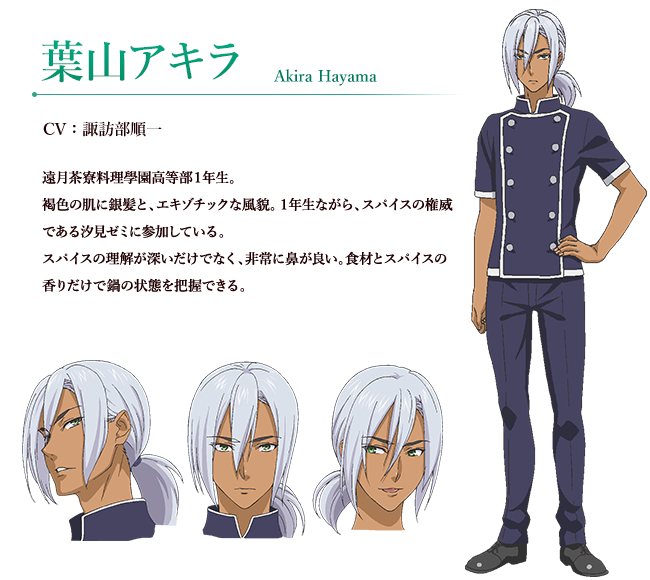

Hyama Akira 葉山亮
人物介紹
葉山亮，出自日本動漫《食戟之靈》中的角色。
遠月學園高等部1年級，汐見潤從印度撿回來的孩子，因為鼻子非常靈敏而作為汐見潤的助手，擅長使用各種香料。
幸平創真的主要競爭對手之一，遠月秋季選拔賽的冠軍。
漫畫中已成為中樞美食機關認定的新十傑中的第九席，後被幸平創真擊敗，現已被退學。

Hayama Akira
My second paragraph.
Hayama Akira
My third paragraph.
Hayama Akira
My fourth paragraph.
Hayama Akira
My fifth paragraph.
Hayama Akira
My sixth paragraph.